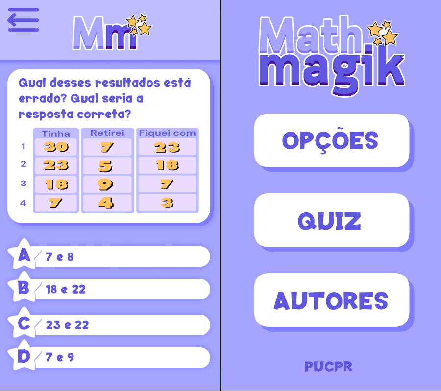

Math Magik
Experiência Criativa
Oque é o MathMagik?
Desenvolvido para a Máteria de Experiência Criativa, o Mathmagik busca permitir a crianças no começo do ensino fundamental treinar o conteúdo de matêmatica de forma rápida. Ele traz várias perguntas de Quiz carregados de fábrica, porém a forma como foi estruturado permite facilmente que mais questões sejam adicionadas pela escola, ou até mesmo pelos próprios alunos.
Minha Contribuição
Eu fiquei responsável pela "direção" técnica do aplicativo, eu desenvolvi a base que permitiu simplificar a implementação de várias telas diferentes assim como o sistema que carrega arquivos direto da pasta da aplicação como questões.